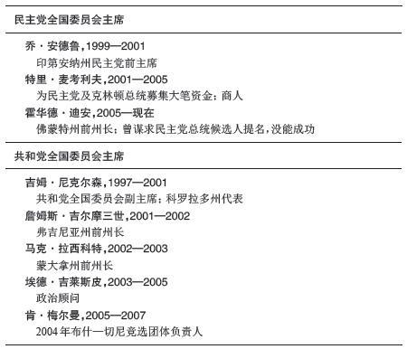
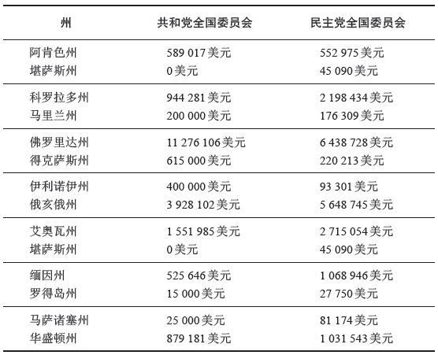

根据奉承者的说法，在20世纪初长期担任纽约州州长的乔治·华盛顿·普朗基特（他同时还是名为“坦慕尼协会”的政治核心团体的领袖之一）曾经这样说过：“要知道，在政治活动里，诚实并不重要，效率并不重要，进步的眼光并不重要。重要的是有机会得到更好的工作、更好的小麦价格和更好的商业条件。”在鼎盛时期，这个团体控制了超过12000个工作机会，每年的工资支出超过1200万美元，数额比当时最大的钢铁企业还要高。
在一个世纪前的“政党的镀金时代”，政党组织（通常是运作良好的核心团体）负责治理。他们招募候选人，确定执政纲要；他们与民众交往，带领民众参加投票；他们安排人手从事公共服务，在民众与政府之间建立联系。那些政坛大佬的政治权力和影响力——还有他们的腐败程度——已经成为传奇。正如普朗基特在为自己的个人利益辩护时所说的，“我看到机会，就紧紧抓住”。那就是当时的政治运作方式。
甚至在20世纪前半叶，各个城市的政坛大佬依然掌控着进入政界的通道。在马萨诸塞州的波士顿市，詹姆斯·迈克尔·柯利在20世纪前半叶的大部分时候都是当地的掌权者。在密苏里州的堪萨斯市，一个名为“彭德格斯特”的核心团体在1920年代取得权力并保持强盛，他们甚至声称靠着他们的安排，哈里·杜鲁门才得以成为参议员，并最终入主白宫。在田纳西州的孟菲斯市，克伦普领导的核心团体在二战之前一直支配着当地政坛。同样的情况还包括：弗兰克·黑格领导的核心团体控制新泽西州的新泽西市；威廉·J.格林控制费城；戴维·劳伦斯控制匹兹堡；理查德·J.戴利控制芝加哥。到了1960年，上述权力分布对于约翰·F.肯尼迪获得总统提名起到了重要作用。
在那个时候，政党的组织形式呈现明显的层级化。这些等级分明的组织靠着物质激励，把选民与负责当地竞选的小头目和地区性的领导者联系在一起，然后又靠着更大的物质激励，把这些领导者与市级政府职位和县级法庭职位联系在一起。作为物质激励，他们为拥入美国城市的新移民提供工作以及食品、衣物等额外援助。此外，他们还提供精神上的激励，让这些新移民有归属感，帮助这些人在陌生的土地上奋斗，让移民不仅汇聚在这里，同时也相互融合，成为整体。
某些强势的领袖掌控着这些政治组织，他们认为那些靠着他们才得以在政府中任职的人理应有所回报，因此他们手中的权力不足为奇。说他们为了达到目的而曲解规则都算是轻描淡写了。这些政坛大佬对于自己的目标和动机毫不掩饰。汤姆·彭德格斯特将之简化为一条政治原则：“最重要的是拿到选票——不管用什么手段。”弗兰克·黑格的政治观点稍有不同：“我就是法律……我做出决定，我采取行动，一切由我！”这些大佬达到了他们的目的。从他们那里得到好处的选民成为忠实支持者，他们的手段往往被忽略。
这些政治团体走向消亡的故事颇为复杂——涉及民主制度改革、政府开始负责提供社会福利（原先这是政党的工作）、腐败曝光以及其他地方性因素。到20世纪最后二十几年，那些曾经风光无限的组织已远不如从前。
到21世纪，这些政治团体看起来就像是过往时代遗留的文物，但政党组织依然存在。以前的政党组织从基层建起，从县级、州级组织再到国家层面，等级分明。现在的政党组织很大程度上将权力从国家层面分流到下级组织。从前的政党组织掌控提名流程，候选人只是政党的产品。现在候选人建立自己的组织来参加初选，政党组织的作用很大程度上体现在为得到提名的候选人提供服务，或者帮助已经当选的获胜者谋求连任。从前政党的工作依赖个人的社会关系以及个人与选民的接触，现在政党的工作重点放在资金募集和电子沟通手段上。
美国政党不同于西方民主国家常见的规划型政党。政党组织及其领袖几乎从不干涉政府决策。至少在20世纪后半叶，可以说美国政党一直在寻找自己的定位。政党组织继续在地方、县、州、国家各级存在。在近年来的选举中，政党组织在竞选流程中扮演重要角色，选民却几乎不清楚这一点。在本章中，我们将勾勒现在的政党组织结构，讨论他们在选举政治中的角色，并且推断未来数十年政党角色可能发生的变化。
要讨论美国的政党组织，或许最好的方式就是问一个简单的问题：你知道民主党全国委员会或者共和党全国委员会的主席是谁吗？美国之外的读者或许会说，这样的问题不公平，只有美国人才能回答。美国读者却挠着脑袋，不知道这些人到底是谁，更不用说他们在做些什么。
表3.1列出了自2000年以来在全国性政党组织中担任高层职务的人员名单。这份名单中有些人并不出名。事实上，大多数民众只听说过霍华德·迪安，因为在2004年民主党总统候选人提名竞选中，他虽然没有取得成功，却一度大出风头。迪安和共和党主席肯·梅尔曼之间的鲜明对比很耐人寻味。
梅尔曼成为共和党全国委员会主席的经历颇为典型。首先，他由乔治·W.布什选出，后者成功获得共和党总统候选人资格。现任总统掌控本党的全国委员会，通常在选择主席时具有决定性影响。其次，在成为全国委员会主席之前，梅尔曼担任过一系列政治职务。2000年，他是布什的总统竞选活动的现场指挥。在其政治生涯初期，梅尔曼曾为几位来自得克萨斯州的参议员提供服务。在布什获胜后，他随之进入白宫，担任政治事务主管。后来他离开白宫，在布什和切尼谋求连任的新一轮竞选团队中担任负责人。梅尔曼是一名政治工作者，与现任总统保持紧密联系；他是竞选专家，但不擅长制定政策。虽然他由共和党全国委员会成员投票选出，但实际上选择他的是上司乔治·W.布什。
与此形成鲜明对照的是，当霍华德·迪安宣布竞选民主党全国委员会主席职务时，政治观察家们全都大吃一惊。迪安向来以打破传统而著称。在他宣布竞选民主党总统候选人提名时，很少有观察家看好他。当时他是一个小州的州长，在全国范围内名气不大，作为局外人他一心想挑战现有格局和党内的当权派。在当时的热点问题上，他采取的立场在一些人看来过于偏激；他不寻求本党领袖的支持；他发展出一套富有新意但未经验证的竞选策略，这套策略很大程度上依赖于互联网。出乎人们的意料，迪安取得了成功。虽然没有赢得提名，但他改变了募集资金和开展竞选活动的方式，同时也让党内的左派深受鼓舞，后者对本党主流候选人颇为不满；另外，他也改变了人们对某些问题的看法。

表3.1 民主党和共和党全国委员会主席
之后，迪安决定接管政党组织。他参选的决定让民主党的中间派成员颇为担忧，他们认为，要想取得全国性胜利，必须持中间立场，而迪安过于激进的行事风格会导致中间派被边缘化。迪安没有采取措施来消除这些疑虑。他给自己的支持者发送电子邮件，宣布参加党主席竞选；他的话很简单：“我们的党必须用朴素的语言来说话，我们的议程必须体现具有进步意义的、财政上可以负担的价值观，这样的价值观把我们整个党——以及绝大多数美国人——团结在一起。”民主党领袖对于他“用朴素的语言来说话”的做法感到忧虑，同时担心他在社会问题上过于激进，不能吸引全国范围内的支持者。
但他们同时也意识到：民主党已经连续输掉两次总统选举，并且这两次参选的都是知名的主流候选人；他们的竞选活动在共和党面前黯然失色，他们的政党已经有十年没能掌控国会，他们的政党实力在国家和地方层面都遭到削弱，并且迪安已经展现出他在技术革新、资金募集和政党组织方面实力非凡。最终，许多人把忧虑藏在心底，迪安击败一批实力强大的传统意义上的政治工作者，成功当选民主党全国委员会主席。
这两位领袖在风格上有何不同？梅尔曼做事像一名典型的党主席。2005—2006年之交的冬季，布什总统的支持率直线下降，原因有好几方面：伊拉克的困局，联邦政府在应对卡特里娜飓风时决策失误，内阁成员陷入谣言，总统批准国家安全局进行窃听活动（这一举动的合法性遭到质疑），在某些人事任命上任人唯亲。梅尔曼是布什总统的坚定拥护者。他站出来回答媒体关于上述事件的各种问题，并且尽量往积极的方面引导。
迪安扮演的角色截然不同。他来到共和党势力占明显优势的地区，站在民主党立场上参与讨论某些重大话题。虽然他没有退缩，但地方民主党人并不总是欢迎他。尤其在南方各州，当地的民主党人对于迪安作为党主席重视本州表示感谢，但许多人认为，迪安传递的信息对于他们的选民来说是错误的。在迪安出现的场合，有不少当选的官员故意缺席。
迪安坚持用朴素的语言来发表演说。有一次，迪安把共和党形容为“基本上属于白人基督徒的政党”。一些成功当选的政党领袖批评了他的言论。康涅狄格州参议员乔·利伯曼说：“这是破坏团结的错误言论，我希望他道歉。”特拉华州参议员约瑟夫·拜登的看法与利伯曼相似：“我不同意他的那番言论。我也不认为，他的话代表大多数民主党人。”
到目前为止，我们讨论了共和党和民主党全国委员会主席所扮演的角色，但我们还没有提及他们领导的委员会。每个政党的全国委员会成员由各州政党组织选出。虽然委员会在形式上掌握着政党的权力，但实际上很多时候主席只是出现在公共场合，大多数事务都由工作人员来完成。两党的总部规模庞大，办公地点固定设在国会大厦，全国委员会的人员就在那里工作，内容包括募集资金、制定策略、发明战术、开展调查、提供资金、帮助政党和候选人为每一轮竞选活动做好准备。全国委员会工作人员最重要的一项职责是监督全国范围内的竞选活动，看哪些活动胜利在望、哪些必然失败，哪些竞争激烈，哪些候选人需要资金支持，诸如此类。随即，他们负责整合相关资源。
表3.2提供了一些有趣的比较。我们把人口数量大致相等的州放在一起。在每个例子中，两党的全国委员会都把更多资源分配给竞争激烈的州，而不是缺乏竞争的州。反差最明显的例子是俄勒冈州和加利福尼亚州。2004年，两党在俄勒冈州展开激烈竞争，而加利福尼亚州的局势呈现一边倒。因此，两党的全国委员会分配给俄勒冈州委员会的资金与分配给加利福尼亚州的资金大致相当，虽然前者的人口数量只有后者的十分之一。
表3.2 从全国委员会到州委员会的资金转移

全国委员会主席及其成员与其在四个所谓“国会山”委员会的对接机构保持紧密合作，这些委员会都设立在政党全国总部内。共和党众议院全国委员会、共和党参议院全国委员会、民主党众议院竞选委员会、民主党参议院竞选委员会，这四个委员会在两年一度的国会竞选中扮演着核心角色。每个委员会的主席都由现任国会成员担任，后者由此成为他或她所在政党在国会中的领袖之一。他们的工作很简单：保住现有的国会席位，同时争取新的席位，包括公开竞争的席位以及对方政党中地位不稳的成员所占据的席位。
“国会山”委员会已经存在了很长时间——众议院竞选委员会组建于内战结束后不久，参议院竞选委员会组建于1913年宪法第十七修正案生效后不久，该修正案规定参议员由普选产生。但历史上大多数时候，这些委员会只起到次要作用，唯一的职责是帮助在职的议员募集资金。不过，在过去的二十多年时间里，这些委员会的重要性大为加强。他们不仅继续为候选人募集资金，而且在制定全国性的优先竞选策略时，扮演关键角色。
从2006年的国会竞选中可以清楚看到“国会山”委员会的重要性。2004年，只有不到20个国会选区被认为结果难料。所谓选区“结果难料”（in play）是近年来才冒出来的说法。过去有段时间现任议员被认为在竞选中占据优势，但直到近年来政治工作者才开始采取新的策略，在距离选举还很早的时候（通常提前一年多）就宣布放弃大部分选区，把精力集中到少数几个选区。共和党众议院全国委员会和民主党众议院竞选委员会根据各自的标准，筛选出他们具有优势的选区以及结果无法确定的选区，然后把精力集中到这些选区。这两个政治组织——还有关注国会竞选的政治分析家的报告，比如《库克政治报告》和《罗森博格政治报告》——一直以来都能准确预测出哪些选区将出现激烈竞争。
2006年竞选活动初期，两党及中立分析家瞄准的席位数量几乎一致。由于民主党需要获得15个议席才能重新控制众议院，多数人认为他们成功的希望不大。然而，局势的发展对民主党有利。到2005年秋季，民主党众议院竞选委员会主席拉姆·伊曼纽尔成功招募到具有优势的民主党候选人，足以竞争大约50个席位，这些席位或属于公开竞争，或属于地位突然变得不稳固的共和党议员。共和党众议院全国委员会主席汤姆·雷诺兹声称，局势依然有利于共和党，但同时也意识到他的任务就是保护地位不稳的共和党议员，后者的数量正在不断增加。随着更多席位出现“结果难料”的局面，政党能否准确判断政治版图变得尤为关键。在所有的竞选活动中，资源总是处于稀缺状态，如何分配这些资源往往决定了最终成败。
2006年国会竞选还导致全国委员会主席和“国会山”委员会主席之间首次出现公开矛盾。民主党全国委员会主席迪安继续在共和党占据明显优势的地区宣扬民主党的方针，为此花费大量时间和金钱。民主党众议院竞选委员会主席伊曼纽尔和民主党参议院竞选委员会主席、纽约州参议员查尔斯·舒默提出反对意见，认为应该把资金集中用于有望获胜的席位。在选举的前一年，双方因策略不同产生分歧，并且这种分歧变得日益激烈和公开化，迪安和伊曼纽尔甚至拒绝交谈。2006年竞选中发生的这些事件清楚说明，在面临相似局面的时候，不同的政党领袖各自扮演的角色和责任最终会导致不同的应对措施。
政党在他们瞄准的竞选活动中扮演什么样的角色？在政党组织支配美国政坛的时候，他们用于维系手中权力的关键举措是让官员保持对组织的忠诚。要想做到这一点，关键就是控制提名流程。政党之所以衰落，原因之一就是因为初选改为直接选举，他们失去了对于提名流程的控制。
不过，在21世纪的美国政坛，赢得选举的关键通常是找到一个强势的候选人。许多在职官员能赢得连任，是因为对手或是过于孱弱，或者干脆没有对手（即没有主要政党的候选人参加竞选）。 [12] 当代政党的关键角色之一就是招募强势的候选人来竞选公开席位，或者来挑战对方政党的在职官员。像伊曼纽尔这样的政党领袖要想做到这一点，除非说服潜在的候选人相信他们能够赢得选举，并且承诺如果他们参选，政党将提供竞选援助。评判共和党众议院全国委员会主席和民主党众议院竞选委员会主席是否称职，就要看他们能否说服强势的候选人代表本党参加竞选。对于政党领袖来说，招募候选人已经成为最重要的职责。
一旦候选人招募到位，政党组织的任务就变成提供竞选资源。一部分资源以直接捐助的形式分配给候选人，但在竞选联邦政府职位时，政党能够提供的资金援助有数额限制，从众议员候选人的5000美元到参议员候选人的35000美元，金额不等。 [13] 同样重要的是，政党组织还向候选人提供援助。他们为候选人进行形势分析和民意调查。他们帮助候选人润色准备传递给选民的信息，时常还负责制作类型化的广告，以便于在全国各个选区通用。政党委员会还派代表到各个选区，为候选人吸引人气，并且帮助他们募集资金。
或许政党委员会能够提供的最重要的援助就是把某个选区界定为“结果难料”。一旦某个政党决定把资源集中用于某个特定的竞选活动，和该党保持一致的利益集团就会把这看作信号，表明他们自己也应该把资源集中到这次选举。政党委员会及其领袖或许受到限制，不能为某次竞选活动提供过多资金，但他们可以自由帮助候选人进行社交活动——这完全有可能成为政党最有价值的贡献。但即便如此，这些社交资源也不应该任意挥霍。“国会山”委员会的领袖希望他们的盟友能够有策略地分配资金，集中用于竞争激烈的选举活动，而不是那些胜负已定的场合。 [14]
很大程度上，全国性政党组织已经成为各种竞选活动的组织核心，他们的工作人员负责招募并支援本党候选人。作为组织机构，民主党全国大会和共和党全国大会在不断发展，大会成员由选举产生，同时每隔一两个月就会出场亮相。对于两党来说，这些机构在形式上具有权威性，但全国公众只见到两名主席，真正的政治事务由幕后的工作人员来完成。众议员和参议员在“国会山”委员会中的确拥有席位，但只有委员会主席和工作人员才承担具体职责。这些职责与政策或治理无关，只涉及募集资金和开展政治活动。全国性政党组织存在的意义，很大程度上就是满足候选人的需求。
戴维·沃德是亚利桑那州民主党主席。前众议员马特·萨蒙是该州共和党主席。但亚利桑那州很少有人知道这两个人的职位。事实上，许多州的政党网站甚至不会注明谁是主席。没人在意这一点。即便是最积极的民众也不会与各州委员会发生接触；即便是在人口最多的几个州，即便是最积极的政党主席，他们的个人情况也少有人知。
过去并不是这样。一些州的政治组织曾经由大佬掌控，和领导地方组织的政坛大佬相比，前者的势力不相上下，甚至更为强大，但两者有着明显差异。许多州的政坛大佬同时也是联邦参议员。这些州的政党核心团体由来已久，当时联邦参议员由州议会选举产生。于是参议员纷纷建立政治组织，以此确保赢得选举。他们用于维系组织运作的办法之一，就是任命自己的支持者成为联邦政府官员。他们之所以能这么做，是因为参议员一直以来都享有特权。所谓参议员特权指的是，联邦参议员有权否决联邦政府在他代表的那个州的任何人事任命，只要这项任命需要参议院批准。参议员选出某些联邦政府官员，后者努力确保州议会的选举结果有利于前者获得连任——显然这样的安排很惬意。
宪法第十七修正案通过后，大多数参议员及其组织的势力遭到削弱，但之后的数十年时间里，一党独大的南方各州保留了残余的核心团体。通常，这些组织的领袖是一些善于鼓动的政治人物，起初他们对民众来说颇有吸引力，但后来就变成了专制统治。美国政治史上最富传奇色彩的故事就与这些组织有关，包括路易斯安那州的休伊·朗及其继任者、密西西比州的西奥多·比尔博、佐治亚州的吉恩·塔尔梅奇。
到了21世纪，州政党组织已经失去了之前的传奇色彩和权力。州政党组织的结构与全国性政党组织相似。每个政党都有州委员会，其中的代表来自地方选区。委员会不经常召开会议。具体事务由工作人员来完成。和全国性政党一样，各州的政党组织在20世纪后半叶迎来复兴。50年前，许多州的党组织是个空壳。许多州没有固定的工作人员，很少有固定的总部，预算很紧张，只有在竞选期间才开展活动。
现在民主党和共和党几乎每一个州级组织都有全职工作人员，许多组织还有全职党主席。州级组织的总部过去一度搬迁到主席所在城市，现在有了固定的办公地点，通常设在州议会大厦。正如所料，各州组织的预算不尽相同，视各州规模而定。但每个州的预算都足以支持连续性的政治活动，足以为选举年做好准备并协调州范围内的竞选活动。
协调竞选活动是州政党组织迎来复兴的关键因素之一。美国法律规定，候选人在竞选联邦政府职位时，可以接受的资金有数额限制。但法律同时又鼓励政党组织向所有代表本党参加竞选的候选人提供资金支持。因此，州政党组织得以建立自己的网站，协调本州范围内的资金募集和志愿者服务；他们也得以为所有的候选人收集、整理、分析选民信息；得以为本党进行民意调查；得以发动选民登记，参加选举；得以发布广告，宣传本党；得以想方设法赢得选票。现在这个时代，选举活动以候选人为中心，同时候选人又必须依靠自己的组织，通过初选来获得提名，因此资金充裕的竞选活动可以全部兑现上述做法；资金有限的竞选活动却只能放弃这些做法。如果政党能够在不同候选人的竞选活动之间进行协调，实现规模效应，无法把过多资金集中到同一个候选人身上的捐赠人，就可以通过其他方式来提供援助。
这种协调作用的运作机制之一就是把资金从某一级政党组织调拨给另一级政党组织。表3.2（参见前文）给出了2004年竞选期间，民主党和共和党全国委员会把资金分拨给各州党组织的具体金额。并不意外的是，这些政党把更多资金投入到胜负未知的竞选活动中，从而使得这些地区的竞选形势变得更为复杂。
2006年，资深联邦参议员约瑟夫·利伯曼参加党内提名竞选，争取连任，结果他遭到挑战，对手是一名来自格林尼治市的商人内德·拉蒙特。在初选中，该党官员公开支持利伯曼。在其他几个州，根据党内规定或惯例，政党领袖必须在所有的初选场合保持中立。还有一些州，政党官员可以在初选中施加影响，但党内的工作人员必须保持中立。
在某些方面，各州的政党组织不尽相同，多数反映出组织的规模和对本党成员的支持程度。与此同时，各州组织的规则也有所不同，反映出他们所扮演的不同角色。上文提到的政党在初选中扮演的角色就属于这一类，政党组织从保持中立转变为非正式的支持者，有时还根据特殊安排或因为在选票设置方面起到特殊作用而成为正式的支持者。另外，政党组织还可能在提名流程中扮演正式角色。以康涅狄格州为例，赢得政党支持的人将获得提名资格，除非那些没有得到本党支持的对手在初选中向候选人发起强势挑战，比如拉蒙特挑战利伯曼的例子。
在美国的政治体系中，联邦制起到重要作用，从政党组织的角色就可以看出这一点。在若干重要方面，各州组织不尽相同。由于不同的历史渊源和政治文化，他们的政党体系也截然不同。结果就是，政党组织在州级层面扮演的角色差别很大。公众对于州政党领袖了解甚少，但他们领导的组织在竞选活动中扮演着重要角色（这多少取决于该州的竞选激烈程度）。各州的政党领袖都要招募候选人参加选举，但某些州的政党组织扮演更为重要的角色，事实上他们将决定哪位候选人能代表本党参加普选。
本章开头介绍了地方性政治组织在过去具有传奇色彩的强势地位，但支撑这些传奇的根基早已消失。不过，地方性政党组织继续存在，并且在选举政治中扮演重要角色。
美国政党一直以来都采取权力分散的组织形式，他们从基层开始，一直建设到国家层面。基层的政党委员会以选区或镇为单位选出；这些委员会的成员选出上一级组织的委员会成员，通常城市地区以选区为单位，乡村地区以县为单位。这些层面的政党官员选出州委员会的成员；州政党组织的领袖选出全国性委员会的成员。这种形式上的组织结构创始于150多年前，到现在几乎没有变动。 [15]
关键问题总是围绕着权力。在政坛大佬统治的年代，权力掌握在官员手中，因为他们控制着职位——这些人通常是市长或县长，他们的职位取决于政坛大佬。在一些州，联邦参议员掌握权力，但更常见的情况是，地方领袖才是最有实力的人。全国性的政党领袖通常缺乏实力，只有有限的资源和影响力。他们的任务就是在强大的、不受管束的地方领袖和州领袖之间进行协调，达成一致。
现在的政党权力主要源自对资金的掌控。政党组织的大多数资金都是在全国性层面进行募集。州政党领袖和地方领袖（后者依赖程度更高）要靠着全国性政党领袖的能力和慷慨程度来获取资金。
但这不等于说，地方领袖的角色就不重要。他们扮演的是政党的传统角色。他们招募候选人参加竞选。他们负责协调志愿者，并且激励本党支持者。他们为候选人刊登广告，发起以面对面交流为特色的竞选活动，这在地方选举中依然起到关键作用。他们努力工作，发动作为政党根基的支持者前去投票。十几年前，这项工作需要大量人手。地方政党需要大量志愿者来编制选民清单，撰写邮件，拨打电话，分发传单。
如果说现在还有亲力亲为的竞选活动，那一定发生在地方层面。不过互联网时代新的沟通方式减轻了竞选负担。哪怕是在基层，政党组织也建立了网站；志愿者定期接收关于选举进展的数据更新；政党借助电子通讯方式来协调志愿者并关注他们的行为。竞选活动依然需要向周边社区发放传单，并陪同候选人上门拜访选民，但协调志愿者的方式发生了变化，现在是通过建立数据库，把那些有志于为政党或为某位候选人服务的志愿者登记在册，便于追踪管理。2004年，霍华德·迪安在初选中发起的竞选活动证明，网络能有效募集资金，并且便于志愿者的沟通与协调。地方性政党组织借鉴了这些经验，哪怕是最简单的组织也从迪安那里学到了许多技巧。
可以这样说，在波士顿举行的民主党全国大会上，约翰·克里的总统竞选活动达到高潮，当时克里步入会场，向全体成员行礼致敬，宣称自己“出于责任向大会进行汇报”。大会允许克里的竞选活动借助会场进行宣传，把全党团结在一起，并且让全国民众来了解他们的候选人。但同样值得注意的是，那一次全国大会并没有做出任何重大决定。当年的早些时候，民主党选出承诺支持克里的会议代表，由此提前确定提名资格的归属。克里选择北卡罗来纳州联邦参议员约翰·爱德华兹作为他的竞选搭档。他的竞选团队密切注视着政党纲领的写作进展，确保本党的官方立场与候选人的立场保持一致。
对于两个主要政党来说，全国大会在形式上是最高决策机构，但实际上大会很少做出决定。不过，全国大会自有其作用，其中之一就是团结全党。大会期间，政党的忠实支持者聚到一起，享受融为一体的氛围，为本党的历史感到自豪，并且共同谋划短期内有望实现的光明前景。更重要的是，两党的全国大会规定了本党的运作方式，包括随后的选举提名流程。 [16]
此外，全国大会还以政党纲领的方式来表明本党在当前重大问题上的立场。有些时候，政党纲领委员会内部的争论反映出本党内部更为重大的观念分歧。其他时候，候选人的支持者严格控制纲领写作。不同于采取议会制的民主国家，美国的政治领袖不一定非要恪守本党纲领，但在选民看来，发布政党纲领就是为了明确政党的立场。因此，潜在的总统候选人都会努力主导纲领的写作过程。他们不希望由于采取他们并不赞同的争议性立场的纲领而受缚。
鉴于政党在提名流程中发挥的不同作用，各州的政党大会有所差异。如果政党起到关键作用，那么候选人的竞选团队会竞相让支持自己的代表坐在席位上进行表决。这样的大会时常发生争吵。候选人之间的立场差异体现在围绕规则和纲领发生的争吵，以及支持者的公开表态。大会最终支持赢得提名的候选人时，该党要么展示团结，要么继续分裂，这取决于大会所支持的对象是否会在初选中遭遇挑战。
在其他州，政党大会仅仅是展示党内团结的工具。大会成员聚在一起，那些在职的官员设法鼓动本党的忠实支持者参加他们的竞选活动。大会颁布纲领，但通常没什么意义。这些大会的主要目的就是宣告秋季竞选正式开始，并且动员全党为后面的活动准备好大量人手。 [17]
美国的政党组织体现出联邦制的特色。每个选举层面都设有组织。各级组织保持一致的地方在于，真正的事务都由工作人员来完成，政党的主要角色就是协助候选人竞选职位。形式上的组织等级不等于党内的地位差异。政党组织的领袖并不能管制以该党名义当选的官员。政党的实力与该党在竞选活动中提供的援助密切相关。现在政党组织扮演的角色与一个世纪前有着显著差别，这反映出选举流程的某些关键方面发生的重要变化，比如获胜后的奖励、参选的激励和接触选民的手段。